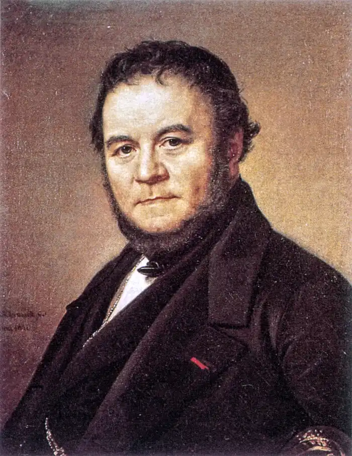
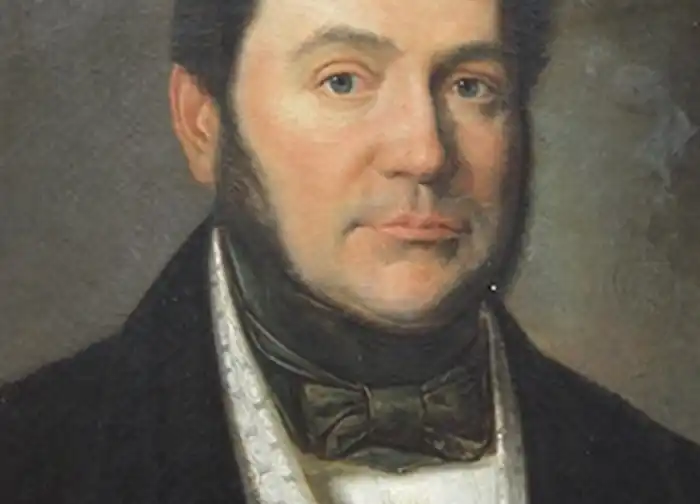
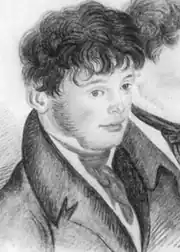

СТЕНДАЛЬ (АНРІ-МАРІ БЕЙЛЬ)
(1783-1842)
Один з видатних французьких письменників XIX століття Анрі Бейль творив під псевдонімом Фредеріка Стендаля (Стендаль — назва німецького міста, у якому народився відомий німецький мистецтвознавець XVIII століття Вінкельман). Стендаль народився 23 січня 1783 року в Греноблі, у родині багатого адвоката. Його дід, лікар і громадський діяч, захоплювався ідеями Просвітництва й був шанувальником Вольтера. Але з початком революції в родині погляди дуже змінилися, батько Стендаля змушений був навіть ховатися. Мати хлопчика рано померла, і сім'я надовго вбралася у траур. Батько не переймався вихованням сина, довіривши його католицькому абатові Ральяну. Це призвело до того, що Стендаль зненавидів і церкву, і релігію. Таємно від свого вихователя він почав знайомитися з працями філософів-просвітників (Кабаніса, Дідро, Гольбаха). Читання, а також найбільш сильні враження і переживання дитячих років, пов'язані з Першою французькою революцією, стали визначальними моментами у формуванні світогляду майбутнього письменника. Прихильність до революційних ідеалів він зберіг на все життя. Жоден із французьких письменників XIX століття не відстоював ці ідеали з такою пристрастю і сміливістю. У 1797 році Стендаль вступив у Греноблі до Центральної школи, метою якої було введення в республіці державного і світського навчання замість релігійного, і озброєння молодого покоління знаннями й ідеологією буржуазної держави, що народжувалася. Тут хлопець захоплювався математикою. Після закінчення курсу його відправили до Парижа для вступу в Політехнічну школу, куди він так і не вступив. Стендаль прибув до Парижа через декілька днів після перевороту 18 брюмера, коли молодий генерал Бонапарт захопив владу і оголосив себе першим консулом. Тоді ж почалися приготування до походу в Італію. У 1800 році сімнадцятилітній Cтендаль вступив в армію Наполеона. Він прослужив у ній понад два роки, а потім подав у відставку й 1802 року повернувся до Парижа з прихованим наміром стати письменником. Стендаль був прихильником ідеалізації Наполеона, що відбилося і в його творчості. Але його ставлення до Наполеона, особливо після захоплення останнім престолу Франції і перетворення на імператора, було, проте, досить критичним. Деякі зауваження Стендаля свідчать про те, як добре він розумів деспотичні й узурпаторські прагнення Наполеона і яку погрозу він вбачав у ньому для справжнього духу революції. Стендаль брав участь у поході Наполеона в Росію в 1812 році, був у Москві, Смоленську, Могильові, зазнав жахи зимового відступу французької армії з Росії. Враження про Росію були надзвичайно сильні. Він бачив героїзм російського народу, який захищав свою батьківщину, бачив також і жорстоку сваволю самодержавства. Після падіння Наполеона й повернення Бурбонів у Францію Стендаль їде до Італії, лише наїздами буваючи на батьківщині. Стендаль полюбив Італію; ця країна відіграла чималу роль у формуванні поглядів письменника. Його приваблювало інтенсивне громадське життя Італії. У 1821 році відбуваються повстання карбонаріїв у ряді міст (Неаполь, Турін). Співчуття Стендаля цьому рухові дало підставу урядові звинуватити його в приналежності до повсталих і запропонувати терміново залишити австрійські володіння північної Італії. Перебування в Італії залишило глибокий слід у творчості Стендаля. Він із захопленням вивчав італійське мистецтво, живопис, музику. Ця країна надихнула його на цілу низку творів. Це робота з історії мистецтва "Історія живопису в Італії", "Прогулянки по Риму", новели "Італійські хроніки". Нарешті, Італія дала йому сюжет одного з найбільших його романів "Пармська обитель". Перебування у Франції, де правили ненависні Стендалю Бурбони, стає для нього нестерпним. Це ставлення письменника до реакції і режиму Реставрації знайшло своє вираження в його кращих романах. У 1830 році Стендаль одержав від короля Луї Пилипа призначення в Трієст консулом, але його не затвердили, як "неблагонадійного", у Трієсті. Стендаль стає консулом у папських володіннях у Чівіта Веккія. Його смілива, незалежна думка, співчуття революції і якобінцям, атеїзм, його сповнені бойового протесту твори робили однаково тяжким його перебування як в Італії, так і в себе на батьківщині. Стендаль почував себе хворим, проте досить часто їздив з Чівіта-Веккії до Рима. У 1841 році з ним стався перший апоплексичний удар. Йому дали відпустку, і восени він знову приїхав до Парижа, маючи намір пробути там усього кілька днів. І несподівано його звалив другий удар. Після смерті письменника навколо його імені критики створили "змову мовчання". Першим, хто заговорив про нього і змусив звернути увагу на Стендаля, був Бальзак. Називаючи Cтендаля чудовим художником, Бальзак стверджував, що зрозуміти його можуть тільки найбільш піднесені уми суспільства. Творчість Стендаля належить до першого етапу в розвитку французького критичного реалізму. Стендаль вносить у літературу бойовий дух і героїчні традиції нещодавньої революції. Зв'язок його з просвітителями можна спостерігати як у творчості, так і в його філософії й естетиці. У своєму розумінні мистецтва й ролі художника Стендаль йде далі від просвітителів і стверджує, що мистецтво за своєю природою соціальне, воно служить суспільним цілям. Це положення Стендаль перетворює на бойову зброю проти мистецтва свого часу, насамперед проти класицизму. Його мистецтвознавчі роботи були гостро публіцистичні. Однією з головних його робіт з літератури є "Расин і Шекспір" (1825). Стендаль підкреслює, що художник тільки тоді виконує своє призначення, коли він веде за собою суспільство. Якщо художники діють поодинці, не пов'язані з масою, вони тоді — ніщо. Естетичні положення просвітителів Стендаль розвиває в нових історичних умовах — після Французької революції 1789— 1794 років, у період революції, що знову назрівала, 1830 року. Через усі твори проходить думка про важливість історичних зрушень, які неминуче відбиваються в мистецтві. Усі його статті з мистецтва перейняті почуттям нового. З кожною новою історичною епохою змінюється поняття краси, говорить Стендаль. Те, що здавалося гарним людям XVII століття, вже не може здаватися гарним тим, хто пережив революцію 1789 року. Змінюється також і історична роль письменника. Цінність письменника, переконаний Стендаль, визначається не тим, як добре він вивчив класиків, мистецтво минулого, а тим, якою мірою він брав участь у революційних подіях, в суспільному житті свого часу. Головну помилку класицистів Стендаль вбачає в тому, що вони хочуть зберегти те мистецтво, що склалося ще задовго до революції. Новим напрямком він вважає романтизм — як нове мистецтво, що веде боротьбу з усім відсталим, відживаючим. Ще одне важливе положення: мистецтво повинне бути правдивим. У романі "Червоне і чорне" він характеризує роман як "дзеркало, яке проносять по великій дорозі". Якщо дорога брудна, якщо на ній є калюжа, це неминуче відіб'ється в цьому дзеркалі, і дарма було б обвинувачувати дзеркало в тім, що воно відбиває точно; треба обвинувачувати дорогу, або, вірніше, доглядача дороги, в тім, що він погано порядкує на ній". Нарешті, остання теза — це необхідність учитися в Шекспіра. Стендаль пише, що романтики ніколи не радять прямо наслідувати драми Шекспіра. Цій великій людині необхідно наслідувати в манері вивчати світ, серед якого ми живемо, бо він дає своїм сучасникам саме той жанр трагедії, що їм потрібен. Таким чином, у своїх естетичних поглядах Стендаль є учнем і продовжувачем просвітителів. їхнє вчення він розвиває за нових історичних умов, що накладає різкий відбиток на його погляди й образи, надаючи їм нової якості. Усі вимоги до мистецтва він ставить у залежність від завдань, що їх висуває революція. Зв'язок Стендаля з просвітителями можна простежити і в галузі філософії,— він був учнем просвітителів-матеріалістів Дідро, Гельвеція, Кабаніса. Особливе місце у філософських поглядах Стендаля посідає питання про людину. Подібно до просвітителів, Стендаль твердить, що людина повинна гармонійно розвивати всі закладені в ній здібності й сили і спрямовувати їх на благо батьківщини, рідного краю, суспільства. Здатність до великого почуття, до героїзму — ось якості, що визначають повноцінну особистість. Виняткове місце в його філософії і творчості посідає проблема пристрасті. У розумінні Стендаля пристрасть ніколи не суперечить розумові, а перебуває під його контролем. Герої романів Стендаля нерідко виступають такими ж раціоналістами у своїй любові: Жюльєн Сорель, Фабриціо, Сан-северіна, навіть охоплені сильною пристрастю, завжди здатні оцінити своє почуття, свої вчинки, підкоряючи їх розуму. Отже, в літературу XIX століття Стендаль вносить бойовий дух століття і революції, віру в розум, у гармонійну особистість, культ сильних пристрастей. Але відстоюючи ідеали революції, він змушений вдавати, що ці священні для нього ідеали далекі від сучасності, у якій тріумфує проза буржуазного життя. Героїчне стає непотрібним у практиці буржуазних відносин, там, де панує безнадійна тупість, гонитва за наживою, кар'єризм. У цих умовах людині сильних пристрастей, яка жадає героїчного, немає місця, і вона неминуче вступає в протиріччя з буржуазною дійсністю. У цьому й полягає трагедія головних героїв Стендаля. У 20-х роках Стендаль пише чудову новелу "Ваніна Ваніні", що ввійшла пізніше в "Італійські хроніки". У ній розкривається епізод з історії революційно-демократичного руху карбонаріїв в Італії. "Червоне і чорне" Цей перший великий роман Стендаля вийшов у 1830 році, в рік Липневої революції. Про глибокий соціальний зміст роману свідчить уже його назва. Під "червоним", "чорним" Стендаль мав на увазі зіткнення двох сил — революції (червоне) і реакції (чорне). Епіграфом до свого роману Стендаль узяв слова Дантона: "Правда, сувора правда!". Події роману Стендаля відбуваються у Франції за часів доби Реставрації ("Хроніка XIX століття" — такий підзаголовок роману) з її гострими соціальними суперечностями й класовим розшаруванням. І хоча провідну роль у сюжетному плані відіграє біографія Жульєна Сореля, головного героя роману, історію життя якого авторові підказала хроніка кримінальної справи, цей твір виходить далеко за біографічні межі лише однієї дійової особи, стає романом широкого соціально-психологічного зразка, в ньому представлена майже вся Франція, столична й провінційна, не тільки аристократія і буржуазія, а й ремісники та дрібні підприємці. Французька революція звільнила енергійних людей, які прагнуть свободи та щастя.